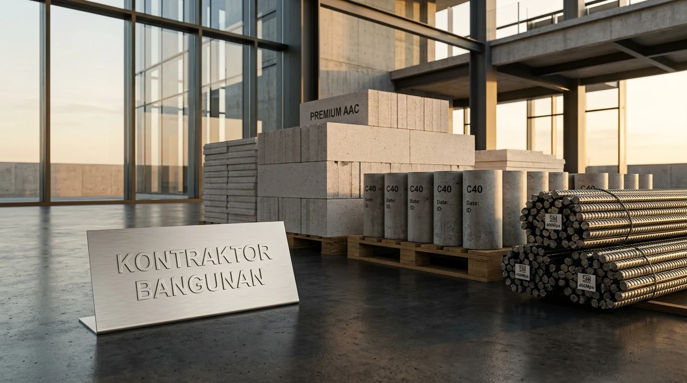

Mengapa Perhitungan Kebutuhan Material Bangunan Sering Mengalami Selisih?
Selisih volume material terjadi akibat pengabaian faktor susut adukan, perbedaan dimensi riil di lapangan, serta pemotongan besi yang tidak terencana dengan rapi.
Berdasarkan data riset empiris Lembaga Pengembangan Jasa Konstruksi (LPJK) periode 2025/2026, sekitar 14,8% pembengkakan anggaran pada proyek rumah tapak mandiri disebabkan oleh material waste yang tidak terkendali. Ketika tukang melakukan pencampuran semen dan pasir tanpa takaran takar (dolak) standar, volume pasta semen yang dihasilkan menjadi tidak konsisten. Begitu pula pada saat pemasangan dinding, ketebalan spesi mortar yang melebihi standar 2 cm akan menguras stok semen hingga 25% lebih cepat dari kalkulasi teoretis.
Faktor lain yang sering diabaikan adalah sisa potongan besi tulangan (scrap metal). Besi beton diproduksi pabrikan dengan panjang standar 12 meter. Apabila perencanaan pemotongan (bar bending schedule) tidak dibuat sejak awal pembuatan gambar kerja, sisa potongan pendek yang tidak terpakai akan terbuang percuma dan membebani total pengeluaran pemilik proyek.
- Kontrol Mutu Pasir: Pastikan pasir pasang yang dibeli terbebas dari kandungan lumpur berlebih (>5%) agar daya rekat mortar tidak menurun yang menyebabkan retak rambut plesteran.
- Pasangan Trasraam Kedap Air: Untuk area basah seperti kamar mandi dan dinding luar exposed, gunakan campuran trasraam kedap air (1 Pc : 2 Ps atau 1 Pc : 3 Ps) setinggi minimal 30–50 cm dari muka lantai.
- Penyimpanan Sak Semen: Gunakan palet kayu dengan elevasi minimal 20 cm dari lantai ruang tertutup agar kelembapan tanah tidak merusak semen.
Bagaimana Rumus Menghitung Kebutuhan Semen Bata dan Pasir Dinding?
Kebutuhan material dinding dihitung dengan rumus luas dinding bersih dikalikan koefisien standar SNI per meter persegi sesuai jenis material yang dipilih.
Untuk menghitung dinding bata, langkah pertama adalah menghitung Luas Dinding Kotor (Panjang Keliling × Tinggi Dinding) dikurangi Total Luas Bukaan Kusen Pintu dan Jendela. Setelah mendapatkan Luas Bersih (m²), gunakan koefisien standar berikut:
1. Dinding Bata Merah Konvensional (Campuran 1 Pc : 5 Ps)
Berdasarkan SNI 2835:2008 mengenai pekerjaan dinding:
- Bata Merah: Kebutuhan berkisar 70 buah per m² (termasuk toleransi pecah).
- Semen Portland (PC): 9,68 kg per m² (setara 0,24 sak semen 40 kg).
- Pasir Pasang: 0,045 m³ per m².
Contoh Kasus: Ruangan dengan luas dinding bersih 100 m² membutuhkan 7.000 buah bata merah (+ cadangan 5% = 7.350 buah), 25 sak semen 40 kg, dan 4,5 m³ pasir pasang (setara 1 truk engkel penuh).
2. Dinding Bata Ringan (AAC / Hebel Tebal 10 cm)
Pemasangan bata ringan menggunakan perekat semen instan (thinbed mortar) jauh lebih ringkas dan hemat:
- Bata Ringan Ukuran 60×20×10 cm: Membutuhkan 8,33 keping per m² (1 m³ hebel berisi 83 keping, mampu menutup area ±10 m² dinding).
- Semen Mortar Khusus Hebel: 4 kg per m² (1 sak mortar 40 kg mencakup ±10 m² dinding).
Berapa Kebutuhan Besi Beton dan Cor untuk Struktur Bangunan?
Kebutuhan besi beton dihitung berdasarkan panjang total elemen struktural dikalikan jumlah tulangan utama serta jarak sengkang, ditambah penyaluran kait 15%.
Elemen beton bertulang rumah tinggal 1 hingga 2 lantai umumnya terdiri dari sloof, kolom praktis, balok gantung, dan plat dak beton. Mengacu pada laporan statistik Kementerian Pekerjaan Umum dan Perumahan Rakyat (PUPR) 2025, kepatuhan struktur terhadap dimensi besi beton berstandar SNI menjamin ketahanan gempa hingga intensitas magnitudo 7 pada skala Richter.

Pemeriksaan dimensi diameter aktual besi beton ulir dan polos SNI untuk struktur kolom serta balok sloof.
Formula Perhitungan Besi Kolom Praktis (15×15 cm)
Misalkan total panjang keliling kolom sebuah rumah tipe 36 adalah 48 meter lari:
- Tulangan Pokok (4 Batang Besi ⌀ 10 mm): Total panjang besi = 48 m × 4 batang = 192 meter. Jumlah batang besi standar 12 meter = 192 ÷ 12 = 16 batang. Ditambah faktor overlap sambungan 10% = siapkan 18 batang.
- Tulangan Begel / Sengkang (Besi ⌀ 6 mm Jarak 15 cm): Jumlah cincin = 48 m ÷ 0,15 m = 320 buah. Keliling satu begel (10×10 cm + kait) ≈ 0,5 meter. Total kebutuhan besi = 320 × 0,5 m = 160 meter = siapkan 14 batang besi 12 meter.
Formula Campuran Cor Beton Manual Mutu K-175 (1 Pc : 2 Ps : 3 Kr)
Untuk menghasilkan 1 m³ cor beton bertulang manual bermutu kokoh:
- Semen: 326 kg (≈ 8,15 sak semen 40 kg).
- Pasir Cor: 0,54 m³ (760 kg).
- Batu Split / Kerikil (1–2 cm): 0,76 m³ (1.029 kg).
- Air Bersih: 215 liter.
Tabel Komparasi Perhitungan Manual vs Standar Digital Kontraktor Bangunan
Sistem estimasi material berbasis Building Information Modeling (BIM) milik Kontraktor Bangunan menghasilkan akurasi volume 99% tanpa risiko kekurangan stok.
| Parameter Evaluasi | Perhitungan Konvensional / Mandiri | Standar Kontraktor Bangunan |
|---|---|---|
| Metode Estimasi | Perkiraan kasar berbasis luasan perkiraan tukang | Kalkulasi DED & BIM Software Otomatis (Take-off Qty) |
| Tingkat Akurasi Volume | Rata-rata deviasi selisih 15% – 25% | Akurasi tinggi dengan margin eror di bawah 2% |
| Resiko Material Waste | Tinggi (banyak sisa potongan besi & semen mengeras) | Sangat minim (dikelola jadwal pengiriman just-in-time) |
| Transparansi Spesifikasi | Rawan substitusi merk material non-SNI | Spesifikasi tertulis legal di SPK (Besi SNI, Semen Grade A) |
| Harga Pasokan Material | Harga eceran toko bangunan ritel | Harga grosir langsung distributor rekanan resmi |
| Garansi Pemeliharaan | Tanpa jaminan jika terjadi keretakan struktur | Jaminan pemeliharaan resmi hingga 12 bulan tertulis |
Bagaimana Cara Menghitung Keramik Lantai dan Sanitair?
Volume penutup lantai dihitung berdasarkan luas bersih ruangan ditambah cadangan pemotongan sudut (cutting waste) sebesar 7% hingga 10%.
Pemasangan keramik lantai dan dinding memiliki tantangan pada area sudut, buangan pipa air, dan pola diagonal. Jika luas bersih lantai rumah adalah 60 m² dan Anda memilih granit tile ukuran 60×60 cm (satu dus isi 4 keping = 1,44 m²):
- Kebutuhan Teoretis: 60 m² ÷ 1,44 m² = 41,66 dus.
- Tambahan Waste Pemotongan (8%): 41,66 × 1,08 = 45 dus.
- Semen Perekat Khusus Granit (Tile Adhesive): Butuh 1 sak per 5 m² = 12 sak.
- Pengisi Nat Keramik (Grout Tile): Butuh 1 bungkus (1 kg) per 3 m² = 20 bungkus.
Mengabaikan pembelian dus cadangan sering kali fatal, karena motif dan tonality keramik antar-batch produksi pabrik kerap mengalami sedikit perbedaan warna (shade difference).
Pertanyaan yang Sering Diajukan (FAQ)
Kesimpulan Praktis
Menghitung kebutuhan material secara presisi merupakan kunci utama mengamankan anggaran pembangunan rumah dari potensi pembengkakan biaya. Dengan menguasai rumus dasar perhitungan volume struktur, dinding, dan lantai, Anda dapat memverifikasi setiap pengeluaran secara rasional.
Namun, menyusun kalkulasi untuk seluruh komponen rumah dari pondasi hingga atap membutuhkan ketelitian teknis dan waktu yang intensif. Kontraktor Bangunan siap membantu Anda menyusun perencanaan material yang efisien, transparan, dan teruji mutunya sesuai standar konstruksi nasional.